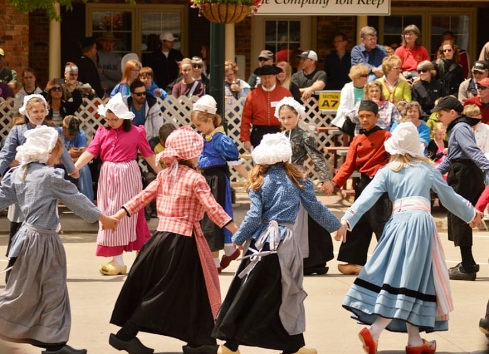

Cultura
A arte e a cultura holandesas têm um legado rico, com artistas renomados como Rembrandt, Vermeer e Van Gogh. O país também é conhecido por seus belos moinhos de vento, campos de tulipas e canais que atravessam várias cidades. Além disso, a Holanda é pioneira no design e na arquitetura moderna.
